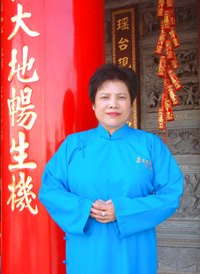
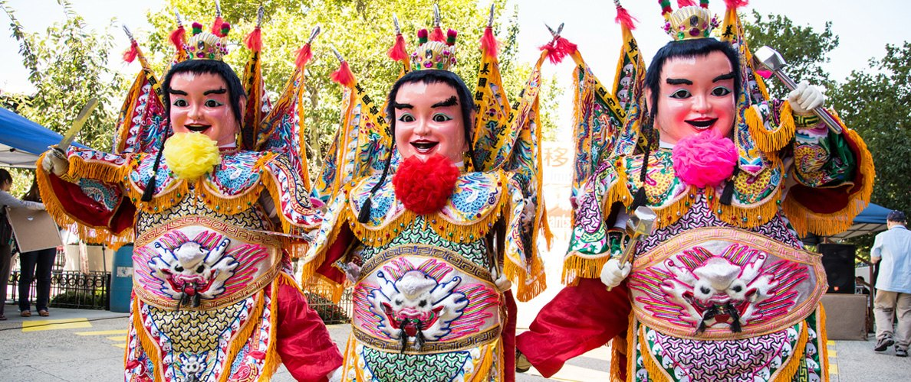

紐約花蓮慈惠堂New York Hua Lian Tsu Hui Temple
紐約花蓮慈惠堂成立於1991年，由何俊忠居士創辦，老堂主何游阿粉女士十幾年的耕耘，再由現任的堂主何春燕接任後，才有今日的莊嚴道場。New York Hua Lian Tsu Hui Temple was founded in 1991 by Mr. Ho Chun-Chung. After more than ten years of devoted work by the former head, Mrs. Ho Yu A-Fen, leadership passed to the current head, Ms. Ho Chun-Yen, under whom the temple has become the dignified place of worship it is today.
點燈祈福Lamp Lighting
每盞 $120。凡安奉太歲、點光明燈、文昌光明燈的信眾，本堂於每月農曆初一、十五誦經上疏。$120 per lamp. On the 1st and 15th of every lunar month the temple chants scriptures and presents prayers for all lamp holders.

堂主簡介Head of the Temple
紐約花蓮慈惠堂堂主何春燕女士，出生於台灣宜蘭縣羅東鎮上，小康家庭，父親是畫家，母親是虔誠的媽祖信徒，自幼就身受父母親的教誨，立身處事講究篤信，堅實。Ms. Ho Chun-Yen was born in Luodong, Yilan County, Taiwan. Her father was a painter and her mother a devout follower of Mazu, and she was raised to value sincerity and steadiness.
本堂設施Facilities
大殿Main Hall
本堂大殿間隔三才，中為無極聖殿，奉祀主神 無極瑤池大聖西王金母大天尊，飽滿豐實，眉慈目秀，神韻儼然，相貌慈祥，全身瀝粉貼金，在燈光映燦下，烘托出無窮的神感寶光，金母高居俯下，猶如一輪明月普照萬物生靈，時刻關心來此朝拜善信的吉凶命運，庇佑信眾平安，廣度有緣；右祀奉祀，玄穹高上帝玉皇赦罪賜福大天尊；左邊奉祀，無上虛空地母無量慈尊大慈尊。At the center the principal deity, the Golden Mother of the Jasper Pool, is enshrined; to the right is the Jade Emperor and to the left the Earth Mother. Before the altar are Guanyin, Guan Di, Mazu, Marshal Zhongtan and the Earth God, among others.
閱讀更多More文昌帝君殿Hall of Wenchang
文昌帝君殿供奉文昌帝君、魁斗星君與大成至聖先師；Dedicated to Wenchang Dijun, Kuidou Xingjun and Confucius, with the attendants Tianlong and Diya.
閱讀更多More五路財神殿Hall of the Five Wealth Gods
五路財神殿供奉天官大帝、文財神范蠡、武財神趙功明、南山通利仙官石崇、北府納庫仙官沈萬山，以及招財和進寶等二位童子。Dedicated to the Heavenly Official and the gods of wealth Fan Li, Zhao Gongming, Shi Chong and Shen Wanshan, with the attendants Zhaocai and Jinbao.
閱讀更多More太歲殿Tai Sui Hall
太歲殿供奉斗姆元君、六十甲子太歲星君。是美東唯一獨有的太歲殿。Home of Doumu Yuanjun and the sixty Tai Sui generals — the only Tai Sui hall on the US East Coast.
閱讀更多More三清殿Hall of the Three Pure Ones
三清殿供奉三清道祖。Dedicated to the Three Pure Ones: Yuanshi Tianzun, Lingbao Tianzun and Daode Tianzun.
閱讀更多More線上點燈和法會報名Lamp & Ceremony Registration
點燈、法會可以線上報名，送出後帶繳費單到堂裡繳交現金。Register online, then bring your payment slip to the temple and pay in cash.
